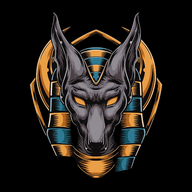
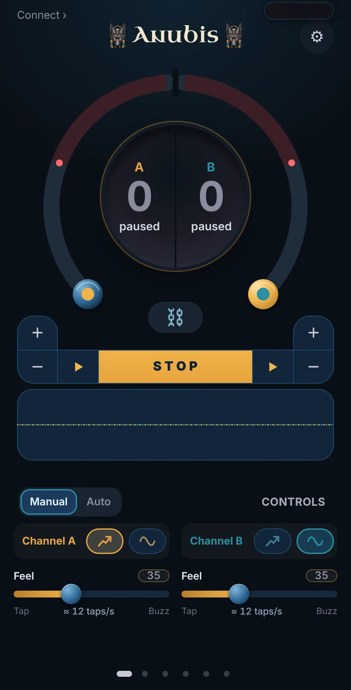
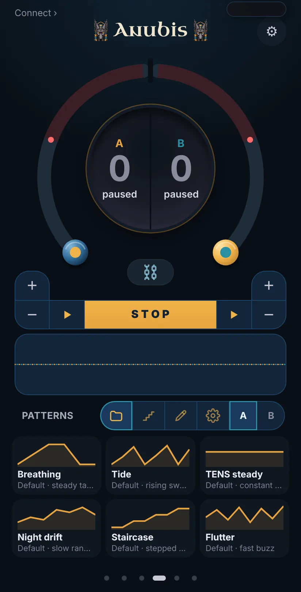
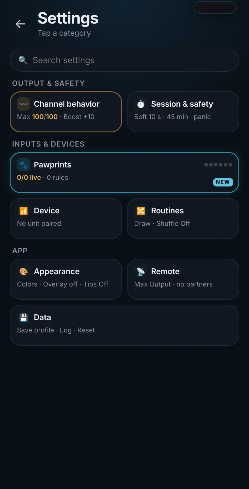
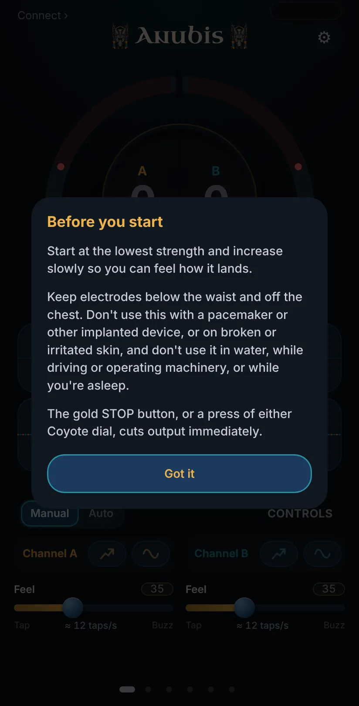

AnubisA free Android app for the DG-Lab Coyote 3 and Pawprints wireless buttons. Clear controls, live readouts, hard limits on every channel, and a STOP that is always one tap away.

Everything runs under your limits. STOP always wins.
The gold STOP stops both channels and every mode at once. A press of either Coyote dial does the same. Optional volume-key STOP.
A cap for A and B. Auto, games, Remote and Pawprints never go above it. Soft start ramps up gently.
Level dial with live output, Max Output lines on the graph, Ramp and Sweep per channel, and Link for A and B together.
Eight Auto profiles with tile settings. Pattern library, step builder and sketching, plus DG-LAB .pulse and .zip import.
Paint output with one or two fingers, record and loop. Or let a file, your phone's audio or the mic drive it.
Connect up to six Pawprint buttons and map presses, holds and tilts with rules. Play Dot Chase or Trivia.
One-on-one by one-time code or QR. You approve each partner; your Max Output holds and your STOP wins.
A floating bubble with live levels and STOP over other apps. Output keeps running in the background.
Guided connect, plus a Coyote Bluetooth log you can copy or share from Settings.
Screens from Anubis v5.3.



Anubis is sideloaded from GitHub Releases.
Anubis-v5.3-release.apk from the v5.3 release on your phone.Start at the lowest strength and increase slowly so you can feel how it lands.
Keep electrodes below the waist and off the chest. Don't use this with a pacemaker or other implanted device, or on broken or irritated skin, and don't use it in water, while driving or operating machinery, or while you're asleep.
The gold STOP button, or a press of either Coyote dial, cuts output immediately.
The same note appears in the app on first run.
On first launch Anubis asks you to accept an eight-item safety agreement, then shows this note. You can read it again any time at Settings → Data → Safety → Safety note.
STOP stops both channels and every mode, and it is always on screen.
A 15-slide tour of Anubis v5.2.